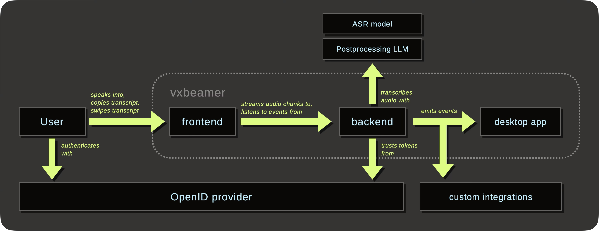

vxbeamer¶
vxbeamer is a self-hosted, personal speech transcriber with a real-time web interface.
I speak into my phone. The voice message is instantly transcribed. Then I can swipe on my phone to beam the transcription to my laptop. Watch the demo video.
Overview¶
For most of my transcription needs, I use Google Gemini (through the @lsnr LINE bot) as it provides the highest accuracy. However, it comes with high latency, which makes it somewhat frustrating to use for voice typing scenarios. (It has very high throughput though, e.g., 15 minutes of audio content can be transcribed in less than 20 seconds.)
vxbeamer uses a different workflow: It uses Qwen3.5 Omni Realtime (via Alibaba Cloud Model Studio) to transcribe speech in real-time. This trades some accuracy for significantly faster feedback.
The frontend is a PWA that can be added to the home screen. Tap the record button to transcribe, swipe right to broadcast a transcription as an event (for custom integrations), and swipe left to delete it.
This project is primarily for personal use and is not designed to be particularly flexible. That said, the setup is documented here: start with Getting started.
Architecture¶

Frontend — React PWA (
apps/website), deployed statically (hosted on Vercel)Backend — Node.js/Hono server (
apps/backend), deployed via Docker (self-hosted)Desktop app — Tauri desktop client (
apps/desktop) that receives backend events and integrates with the local machine (basically, it’s the frontend web app with extra desktop integrations)ASR — any of the providers on the Model configurations page. The default is
qwen(Qwen3-ASR-Flash Realtime via DashScope, Alibaba Cloud); the overview above describes Qwen Omni Realtime, whichASR_PROVIDER=qwen-omniselectsPost-processing — optional; gpt-oss-120b via Groq, for configurations whose output needs formatting cleanup (not needed for Qwen Omni Realtime; the default configuration uses it when
GROQ_API_KEYis set)
The code lives at dtinth/vxbeamer. Under apps/ are the backend, the website, the desktop app and the Android and Wear OS apps; packages/vxasr is the ASR client the backend uses.
Guide
Speech recognition
- Model configurations
- vxasr
- ASR model observations
- Fixture
- Method
- Alibaba Cloud DashScope — Qwen
- Alibaba Cloud DashScope — Qwen Omni (offline)
- Alibaba Cloud DashScope — Qwen Omni (realtime)
- Alibaba Cloud DashScope — Fun-ASR
- BytePlus — Seed-ASR
- OpenRouter
- Meta (direct realtime API)
- Paxa Labs
- Batch providers, timing compared
- Google Gemini 3.5 Transcribe
- Microsoft MAI-Transcribe-2 Streaming (Vercel AI Gateway)
- Typhoon (SCB 10X)
- Repeat runs
- Errors and timeouts observed
- Vendor-documented language support, for comparison
- Reproducing
Apps
Decisions